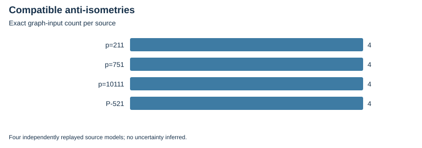

TWIST ROUTES 1–3 · E18 · 2026-10-23 · LOCAL BOUNDED EVIDENCE
Four sources now have explicit full 3-torsion over a specified degree-four extension. Rust verifies pairings, both Frobenius matrices, all anti-isometries and graph points; independent PARI replay is accepted for each source.
The corrected GP emitter leaves the native certificate rows unchanged. Earlier malformed GP attempts remain preserved. Public P-521 work is parameter/torsion verification only.
| Source | Extension degree | Anti-isometries | Nonzero torsion points | Bilinearity checks |
|---|---|---|---|---|
| p=211 | 4 | 4 | 8 | 81 |
| p=751 | 4 | 4 | 8 | 81 |
| p=10111 | 4 | 4 | 8 | 81 |
| P-521 | 4 | 4 | 8 | 81 |

Actual torsion inputs do not identify an indecomposable polarized quotient or supply a faster destination solver. Canonical extension identity registration and full formal bridges remain open.
Verified locally on the same host; complete raw publication is pending artifact-store access. No calibrated speedup, novelty, independent-host replay or NIST DLP is claimed. Original acceptance criteria remain open.
Rust 1.90.0, PARI/GP 2.17.2, one worker except the three-cell E25 orchestration; isolation L0. Caps and limits are in each source-frozen protocol and receipt. Counts are exact finite records; no wall time is admitted. Stochastic uncertainty is not inferred from repeated configurations or targets.
| Receipt / phase | UTC start | Exit | Source pin |
|---|---|---|---|
| torsion-P-521-20261023-v1-gp-v1.json | missing | 0 | missing |
| torsion-P-521-20261023-v1.json | 2026-10-23T01:18:03Z | 0 | ad5e3b4763af |
| torsion-P-521-20261023-v2-adjudication.json | 2026-10-23T01:42:21Z | 0 | 4d4218ec3410 |
| torsion-P-521-20261023-v2-gp.json | 2026-10-23T01:42:21Z | 0 | 4d4218ec3410 |
| torsion-P-521-20261023-v2.json | 2026-10-23T01:42:19Z | 0 | 4d4218ec3410 |
| torsion-icv1-fp10-tm21-b87c79a9-20261023-v1-gp-v1.json | missing | 0 | missing |
| torsion-icv1-fp10-tm21-b87c79a9-20261023-v1.json | 2026-10-23T01:18:03Z | 0 | ad5e3b4763af |
| torsion-icv1-fp10-tm21-b87c79a9-20261023-v2-adjudication.json | 2026-10-23T01:42:19Z | 0 | 4d4218ec3410 |
| torsion-icv1-fp10-tm21-b87c79a9-20261023-v2-gp.json | 2026-10-23T01:42:19Z | 0 | 4d4218ec3410 |
| torsion-icv1-fp10-tm21-b87c79a9-20261023-v2.json | 2026-10-23T01:42:19Z | 0 | 4d4218ec3410 |
| torsion-icv1-fp14-t33-d98086ae-20261023-v1-gp-v1.json | missing | 0 | missing |
| torsion-icv1-fp14-t33-d98086ae-20261023-v1.json | 2026-10-23T01:18:03Z | 0 | ad5e3b4763af |
| torsion-icv1-fp14-t33-d98086ae-20261023-v2-adjudication.json | 2026-10-23T01:42:19Z | 0 | 4d4218ec3410 |
| torsion-icv1-fp14-t33-d98086ae-20261023-v2-gp.json | 2026-10-23T01:42:19Z | 0 | 4d4218ec3410 |
| torsion-icv1-fp14-t33-d98086ae-20261023-v2.json | 2026-10-23T01:42:19Z | 0 | 4d4218ec3410 |
| torsion-icv1-fp8-tm21-71e3bcb7-20261023-v1-gp-v1.json | missing | 0 | missing |
| torsion-icv1-fp8-tm21-71e3bcb7-20261023-v1.json | 2026-10-23T01:18:03Z | 0 | ad5e3b4763af |
| torsion-icv1-fp8-tm21-71e3bcb7-20261023-v2-adjudication.json | 2026-10-23T01:42:19Z | 0 | 4d4218ec3410 |
| torsion-icv1-fp8-tm21-71e3bcb7-20261023-v2-gp.json | 2026-10-23T01:42:19Z | 0 | 4d4218ec3410 |
| torsion-icv1-fp8-tm21-71e3bcb7-20261023-v2.json | 2026-10-23T01:42:19Z | 0 | 4d4218ec3410 |
Native assessment: ../../execution-v2/assessment-20261023-v3/ASSESSMENT.json. Raw members: runs/torsion-*-20261023-v1 and -v2, all GP attempts and adjudications. Source/input/binary hashes and exact argv: E18-receipts.json and ../../execution-v2/receipts/.